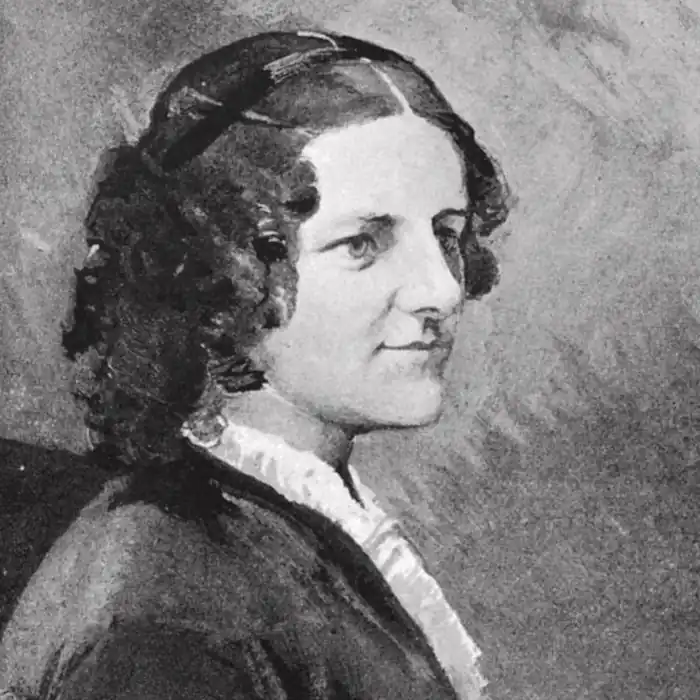

Анна Сьюелл (30 березня 1820, Грейт-Ярмут, Норфолк — 25 квітня 1878, Олд-Кеттон, Норфолк ) — британська письменниця, автор роману "Чорний Красень", відзначеного деякими джерелами як одне з найпопулярніших творів.
Народилася в сім'ї квакерів (Релігійне товариство Друзів); її мати Мері, уроджена Райт, була відомою свого часу письменницею. Через нестачу у батьків грошей здобула в основному домашню початкову освіту. У 1822 році у зв'язку з розоренням магазину, що належав її батькові, сім'я переїхала в Далстон, а в 1832 році — в Сток-Ньюінгтон, де Енн вперше пішла до школи.
У 14-річному віці вона зазнала сильної травми ноги, внаслідок якої до кінця життя не могла ходити без милиці. З цієї ж причини вона стала часто використовувати кінні екіпажі і з часом сильно полюбила коней. Згодом сім'я ще кілька разів переїжджала: до Брайтона у 1836 році, до Лансінга у 1845 році, до Віка у 1858 році, до Бата у 1864 році та до Олд-Кеттона у 1868 році. До свого єдиного роману "Чорний красень" Сьюелл приступила в 51-річному віці і працювала над ним з 1871 по 1877 роки. З 1876, будучи прикутою до ліжка і не здатною писати самостійно, вона надиктовувала текст своєї матері. Спочатку вона не планувала свою книгу як твір дитячої літератури, а прагнула з її допомогою прищепити людям, які працювали з кіньми, "доброту, співчуття та турботу під час лікування". Права на книгу були продані лондонському видавництву "Jarrolds", що заплатив Сьюелл 40 фунтів і видав її того ж року. Письменниця померла 25 квітня 1878 імовірно від гепатиту або туберкульозу. Їй не вдалося дожити до того моменту, коли її роман став відомим і популярним.